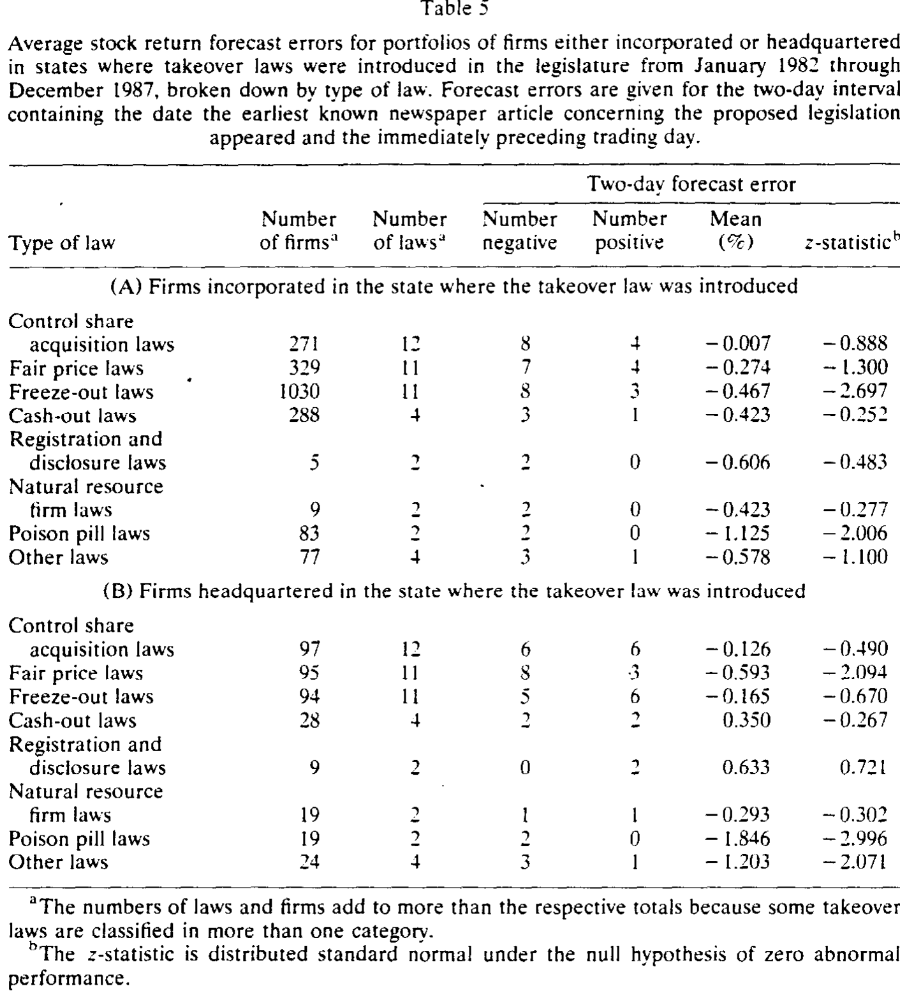
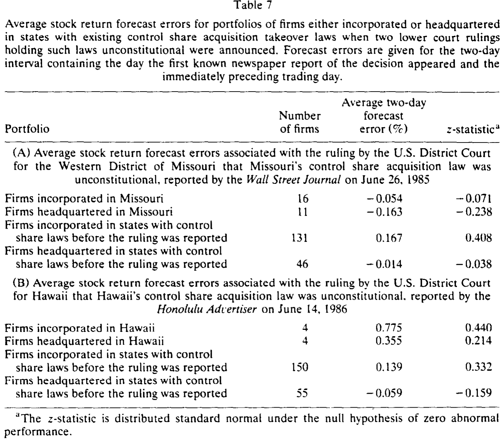
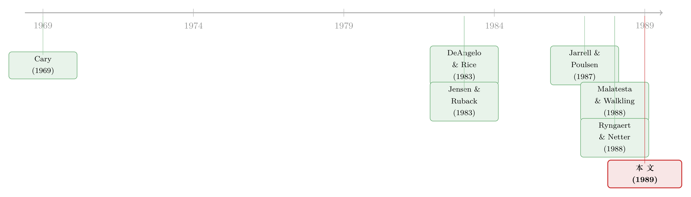

「保护」股东的法律，怎么先砸了股东的钱？
本文读的是 Karpoff & Malatesta (1989, Journal of Financial Economics)：把 1982–1987 年间所有见诸报端的「第二代」州反收购法逐一收集起来做事件研究，发现这些以「保护本州公司」为名的法律，平均而言让相关公司的股价小幅、但统计上显著地下跌；而且这点跌幅几乎全部来自那些事先没有自家反收购防御的公司——已经备好「毒丸」和章程修正案的公司，对新法几乎无动于衷。
1 引言：一部为你而立的法律，为什么让你赔钱
设想一下，你是一家在某州注册的上市公司的股东。某天报纸上登出一条消息：本州议会正在酝酿一部新的反收购法，专门提高外人「敌意收购」你这家公司的门槛。乍一听，这像是一件好事——有人替你把门看得更严了，再也不怕半路杀出个野蛮人把公司贱卖。
可市场的反应却是：股价跌了。
这就是 Karpoff 和 Malatesta 在 1989 年这篇论文里反复要让我们直面的那个张力。所谓第二代州反收购法 (second-generation state takeover laws)，是 1982 年美国最高法院在 Edgar v. MITE 一案中推翻了 37 部旧法之后，各州重新设计、得以绕开宪法障碍的新一批立法。从 1982 到 1988 年，34 个州一口气通过了 65 部以上的此类法律。它们名义上都是在「保护」本州公司和股东。
但「保护」二字在公司金融里从来都是个可疑的词。因为对一家公司而言，「更难被收购」这件事是一把双刃剑：它既可能挡住一桩贱卖、替股东争取更高的控制权溢价，也可能只是替那些本该下台的平庸经理人筑起一道护城河。前者让股东更富，后者让股东更穷。法律到底是哪一面在起作用——这不是靠读法条能读出来的，只能去问市场。
于是 Karpoff 和 Malatesta 做了一件在当时很笨、却很彻底的事：把 1982–1987 年间所有能找到新闻报道的州反收购法都翻出来，逐一测量它们在立法消息见报那几天里，对相关公司股价的影响。
2 两个针锋相对的假说
要理解这篇论文，先得把它要检验的两个假说摆清楚。它们其实是公司治理里一桩老争论在「州立法」这个新场景下的翻版。
第一个是管理层壕沟假说 (managerial-entrenchment hypothesis)。 这一派的源头可以追到 Cary (1969)。它的逻辑很直接：一个运转良好的公司控制权市场 (market for corporate control) 是悬在经理人头上的一把剑——干得不好，就会被人收购、被人换掉。反收购法抬高了控制权转移的成本，等于替无能的经理人卸下了这把剑。如果是这样，州反收购法应当降低股东财富。
第二个是股东利益假说 (stockholders'-interest hypothesis)。 这一派由 DeAngelo 和 Rice (1983) 阐述：敌意收购里存在一个搭便车问题 (free-rider problem)——每个小股东都有动机抢先把股票卖给收购方，哪怕大家齐心把股票攥在手里能换来更高的价。反收购法逼着收购方绕开零散股东、直接去和管理层谈判，而管理层作为股东的谈判代理人，能替大家争得一个更高的成交价。即便有些收购因此被吓退了，期望的收购回报反而上升。照这个逻辑，州反收购法应当提高股东财富。
两个假说，方向完全相反。这正是事件研究最擅长仲裁的那类问题：你不需要去争辩哪套故事更动听，只需要看公告日那几天股价往哪个方向动、动了多少。
3 识别策略：把「立法消息」当成一次事件冲击
这篇论文的识别核心，是把第二代法案的初次新闻见报当作一个外生的信息冲击，去测量它在一个由「相关公司」组成的投资组合上引发的异常收益 (abnormal return)。
但「相关公司」是哪些公司？这正是以往研究吵成一锅粥的地方。Karpoff 和 Malatesta 看得很清楚：单看任何一部法律的效应，结果都极度依赖研究者怎么挑事件窗口、怎么挑样本公司——换个窗口、换批公司，符号都能翻过来。Quirin (1988) 就指出 Sidak 和 Woodward 的结论是被样本里某一家公司的混淆事件带偏的；Margotta 等人 (1990) 也质疑 Ryngaert 和 Netter (1988) 关于俄亥俄法的结论是窗口和样本选得不当所致。
作者绕开这个泥潭的办法有两步。
第一步，不押注单一法律，而是把所有法律一起平均。 任何一部法律的特异性噪声，在几十部法律的横截面平均里会被冲淡，留下的才是「州反收购法」这一类政策的共同信号。
第二步，用两套不同的选样程序做平行检验，看结论稳不稳。 第一套选一个大样本——所有在该州注册 (incorporated) 的公司；第二套选一个小样本——总部设在该州的大公司 (large firms headquartered in the state)。两套样本各有偏差，但若结论在两套样本里同向，可信度就高得多。
至于估计本身，作者用的是 Malatesta (1986) 提出的事件参数法 (event parameter approach)——把市场模型里的异常收益直接写成一个事件期虚拟变量的系数，再用联合广义最小二乘 (joint GLS) 在多家公司间一起估计。直观上，对每家公司 \(i\)、每个交易日 \(t\)，收益被分解成：
$$R_{it} = \alpha_i + \beta_i R_{mt} + \delta_i D_{it} + \varepsilon_{it}$$
这里 \(R_{mt}\) 是市场收益，\(\beta_i\) 是常规的系统性风险载荷，而 \(D_{it}\) 是一个只在立法公告窗口内取 1 的虚拟变量。我们真正关心的，是它的系数 \(\delta_i\)——它度量的正是「在剥离掉大盘正常波动之后，公告期里那一截无法用市场解释的收益」。把组合里各公司的 \(\delta_i\) 平均起来，再看这个平均值是否显著地异于零，就得到了答案。联合 GLS 的好处在于它能照顾到不同公司残差之间的同期相关——毕竟同一个州的公司在同一天受同一条新闻冲击，它们的「异常」是会抱团的。
4 数据：把散落在各州的立法新闻一条条捡回来
样本的搭建本身就是这篇论文的一大体力活。作者梳理了 1982–1987 年间各州的立法档案，按法律类型把它们归了类——最常见的三类是控制股收购法 (control share acquisition laws，15 个州)、公平价格法 (fair price laws，13 个州) 和冻结法 (freeze-out laws，10 个州)，另有 13 部其他类型的法律。论文的表 1 把哪个州在哪一年通过了哪类法、以及哪些法案最终没能落地（带星号）都一一列了出来。
关键的处理是：事件日不取「州长签字日」，而取立法第一次成为公开新闻的那一天。作者特意点名批评了一项研究（Conner, 1989），说它把事件定在两部法律被州长签署当天——那时消息早已被市场消化，自然测不出什么东西。信息何时进入价格，决定了你能不能看见它的脚印。
5 主要结果：小，但确实是负的；而且只砸向「没设防」的公司
现在到了揭晓答案的时刻。
先看平均效应。 无论用「在该州注册的大样本」还是「总部在该州的大公司小样本」，州反收购法的立法公告都伴随着一个不大、但统计上显著的负向异常收益——量级落在几十个基点的水平，t 值刚好越过常规的显著门槛。换句话说，市场对「保护」投了反对票。这一笔账，站在了管理层壕沟假说那一边，而不是股东利益假说那一边。

Table 5
接着，一个自然的问题是：这点负向反应，是均匀地摊在每一家公司头上，还是集中在某一类公司身上？这正是本文最漂亮、也最出人意料的一步。
作者在引言里就埋下了第三对假说——它关心的不再是「法律好不好」，而是「州法律和公司自家的防御之间，是替代还是互补」。一派认为两者是替代品 (substitutes)：已经装了毒丸 (poison pills)[见 Malatesta & Walkling (1988)]和反收购章程修正案 (antitakeover charter amendments)[见 DeAngelo & Rice (1983)、Linn & McConnell (1983)]的公司，再来一部州法，边际上没添多少新东西，所以反应应该被「钝化」。另一派则认为恰恰相反：会主动去装毒丸的公司，往往是那些特别容易被盯上的猎物，州法对它们反而更要命。
数据给出的答案，是替代派的胜利。作者把样本按「公告前是否已有公司层面的反收购防御」一切两半：
- 对没有事先防御的公司，那个显著的负向反应几乎原封不动地保留了下来；
- 对已有毒丸或反收购章程的公司，股价反应在统计上不显著——市场对它们的「新法」近乎无动于衷。

Table 7
如表 7 所示，全样本里那点平均跌幅，其实是被「无防御」那一组撑起来的。这个结果非常干净地说明了一件事：州反收购法之所以让股东赔钱，是因为它替那些原本毫无防备的经理人凭空补上了一道护城河；而对早已自筑高墙的公司，州法不过是在墙外再多刷一层漆，市场早把那点保护提前定了价。
6 文献脉络：从一句法学院的论断，到一场跨越几十部法律的实证审判
把这篇论文放回它所处的位置，脉络就清楚了。
最早的火种来自法学界。Cary (1969) 那句「公司治理机制会被用来把管理层从攻击中隔离出来」，给后来所有「壕沟」叙事定了调。接着，公司控制权市场的重要性被 Jensen 与 Ruback (1983) 系统地总结成证据，敌意收购作为一种纪律机制的地位由此确立。
然后，研究的焦点转向公司自己会采取的防御。DeAngelo 和 Rice (1983)、Linn 和 McConnell (1983) 测量了反收购章程修正案，Jarrell 和 Poulsen (1987) 接着把「驱鲨剂」类条款的股价效应做了大样本检验，而 Malatesta 和 Walkling (1988)——本文作者之一——则专门解剖了毒丸。这一支文献为本文的「替代假说」准备好了全部的拼图：我们已经知道公司层面的防御长什么样、值多少钱，才能去问「州法律和它们是不是一回事」。

而在「州法律」这条线上，此前的实证是一地碎片：Schumann (1989) 和 Sidak、Woodward (1990) 在纽约、印第安纳找到了显著的负效应，Romano (1986) 在另几个州却什么也没找到，Ryngaert 和 Netter (1988) 对俄亥俄法的负面结论又被 Margotta 等人 (1990) 推翻。每个人手里都只有一两部法律，结论自然各执一词。Karpoff 和 Malatesta 这篇论文的历史位置，正在于它第一次把这些碎片汇总起来，用统一的窗口、统一的方法、平行的两套样本，给「第二代州反收购法到底让股东更富还是更穷」这个问题下了一个相对干净的判决。
（关于一部具体州法引发的巨额财富效应，可参见《四十亿美元，是怎样被一部法律「立」没的》；关于公司自家防御的市场反应，则可对照《董事会里坐着谁，决定了一颗「毒丸」是解药还是毒药》与《市场为什么对「反收购条款」无动于衷？——因为它早就猜到了》。）
7 评论与延伸（Q&A + 研究方向）
(a) 几个可能的疑问
Q：跌幅这么小，凭什么说它「证明」了壕沟假说？
关键不在绝对量级，而在方向与符号的稳健性。两个假说预言的符号是相反的，所以哪怕只是一个小而显著的负号，也足以把天平推向壕沟假说一侧。何况一部州法影响的只是「被收购的条件概率」边际上的一点变化，本就不该期待个位数百分比的暴跌；真正有说服力的，是这个负号在两套独立样本里都站得住，且能被「有无防御」的分组干净地解释。
Q：会不会是别的消息混进了事件窗口，制造了假的负收益？
这正是作者用「汇总几十部法律」来对冲的风险。任何单一公司、单一州的混淆事件（如 Quirin 1988 批评 Sidak-Woodward 时所指）在横截面平均里会被稀释。把所有法律一起平均，留下的才更可能是「州反收购法」这一类政策的共同信号，而非某一家公司的特异噪声。
Q：「替代效应」会不会只是反过来——有防御的公司本来就是好公司，所以不跌？
有这种内生性的隐忧，但替代假说的解释更省力：已有毒丸/章程防御的公司，其「抗收购能力」早已被市场计入价格，州法对它们的边际信息量近乎为零，所以反应不显著。这与「这些公司基本面更好」是两套机制，需要更细的设计（比如控制防御采纳的内生性）才能完全分开——这也是本文留给后人的口子。
Q：用「注册地」选样和用「总部所在地」选样，为什么两个都要做？
因为各有偏差。注册地样本覆盖广、但混入大量与该州实际经济联系很弱的小公司；总部样本更贴近「真正受影响的大公司」，但样本小、易受个别公司主导。两套样本若同向，结论才不至于是某一种选样口径的人为产物。
Q：这篇论文能不能说州反收购法「应当被废除」？
不能，至少不能直接推出。论文测的是股东财富，而立法的受益者可能是经理人、员工、本地社区等其他利益相关者——这正是壕沟假说里「立法者为何会通过一部不利于股东的法律」的政治经济学解释（股东面临组织起来反对立法的搭便车问题）。股东赔钱，不等于社会总福利下降。
Q：和 Delaware 这种「公司注册天堂」的故事矛盾吗？
不直接矛盾。本文说的是「新增一部反收购法」在公告时的边际反应，而「一个州的整体法律环境是否让公司更值钱」是另一个长期的、横截面的问题（可参见《租来的法律，凭什么让公司更值钱？》）。短期的事件反应为负，与长期均衡里公司自愿选择某州注册，完全可以并存。
(b) 几个可能的研究问题与提案
1. 州反收购法对公司债权人的财富效应。 - 【经济故事】反收购法降低了被收购的概率，而收购往往伴随杠杆上升、信用恶化。对股东是坏消息的东西，对债权人可能是好消息：少了一场可能掏空抵押的杠杆收购，存量债券反而更安全。股、债财富的反向变动，能帮我们把「壕沟」与「风险转移」两条机制分开。 - 【可行性】中。需要把本文的立法事件日匹配到公司层面的债券价格（如 NAIC、TRACE 时代之前则较难），样本受限于公告期内有活跃交易债券的公司。识别沿用本文的事件研究框架即可，难点在债券流动性与定价噪声。
2. 外资持有人对州反收购法的差异化反应。 - 【经济故事】外国机构投资者通常更依赖「用脚投票」和控制权市场来约束管理层，本地的政治网络对他们鞭长莫及。若一部州法主要服务于本地经理人的壕沟，那么外资持股比例越高的公司，公告期负反应是否越强？这能把「政治俘获」的渠道照出来。 - 【可行性】中。需要 1980s–1990s 的机构/外资持股数据（13F 的外资识别较粗），与立法事件匹配。识别为横截面交互（负反应 × 外资持股），内生性来自外资本就偏好某类公司，需控制规模、行业。
3. 把「替代效应」做成一个连续的剂量反应。 - 【经济故事】本文把防御切成「有/无」二元。但防御是有强弱层次的——单一驱鲨剂、毒丸、错列董事会、多重叠加。如果替代假说成立，公告期的负反应应当随「已有防御强度」单调递减，直到趋零。一条干净的剂量-反应曲线，比二元分组更有说服力。 - 【可行性】高。防御条款数据可从 IRRC（本文参考文献中已出现 Rosenbaum 1989 的 IRRC 反收购防御汇编）逐条编码，事件框架现成。主要工作量在条款的人工编码与强度赋权。
4. 法律类型的横截面：哪一类法最伤股东？ - 【经济故事】控制股收购法、公平价格法、冻结法对收购的「咬合力」不同——冻结法相当于一部带强制延迟的公平价格法，理论上对收购的阻吓最硬。若市场理性，最硬的法应当引发最大的负反应。这是对「市场是否真在为法律的实质内容定价」的一次内部一致性检验。 - 【可行性】高。本文已按类型归好类（表 1），只需在各类型子样本上重做组合异常收益。代价是分类后样本变小、统计功效下降。
参考文献
Cary, W. (1969–70). Corporate devices used to insulate management from attack. Antitrust Law Journal 39, 318–333.
DeAngelo, H. and E. M. Rice (1983). Antitakeover charter amendments and stockholder wealth. Journal of Financial Economics 11, 329–360.
Jarrell, G. A. and A. B. Poulsen (1987). Shark repellents and stock prices: The effects of antitakeover amendments since 1980. Journal of Financial Economics 19, 127–168.
Jensen, M. C. and R. S. Ruback (1983). The market for corporate control: The scientific evidence. Journal of Financial Economics 11, 5–50.
Karpoff, J. M. and P. H. Malatesta (1989). The wealth effects of second-generation state takeover legislation. Journal of Financial Economics 25, 291–322.
Linn, S. C. and J. J. McConnell (1983). An empirical investigation of the impact of 'antitakeover' amendments on common stock prices. Journal of Financial Economics 11, 361–400.
Malatesta, P. H. (1986). Measuring abnormal performance: The event parameter approach using joint generalized least squares. Journal of Financial and Quantitative Analysis 21, 27–38.
Malatesta, P. H. and R. A. Walkling (1988). Poison pill securities: Stockholder wealth, profitability, and ownership structure. Journal of Financial Economics 20, 347–376.
Ryngaert, M. and J. Netter (1988). Shareholder wealth effects of Ohio antitakeover law. Journal of Law, Economics, and Organization 4, 373–383.
Schumann, L. (1989). State regulation of takeovers and shareholder wealth: The case of New York's 1985 takeover statutes. The Rand Journal of Economics 19, 557–567.